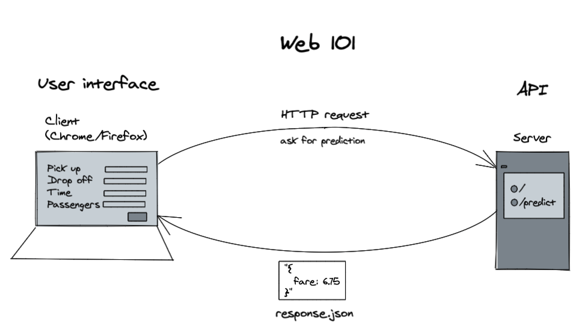
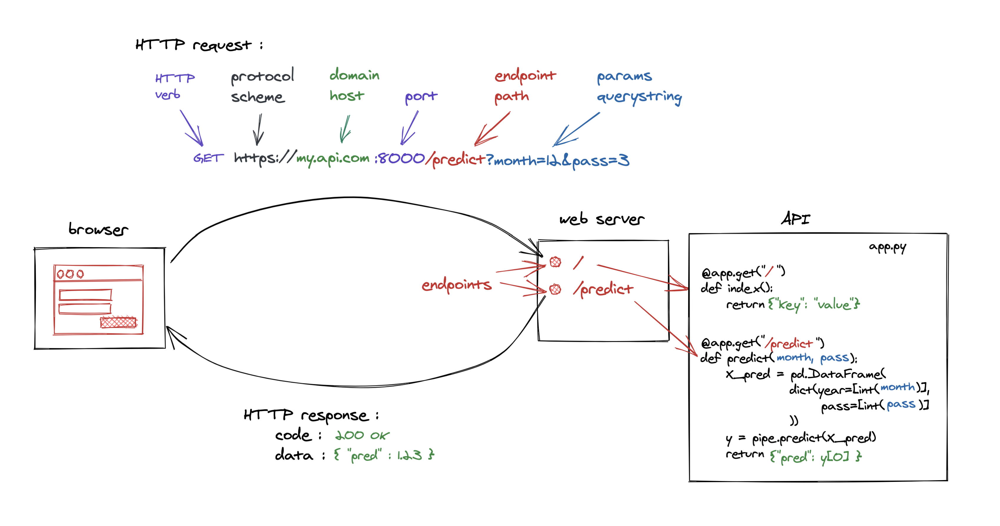
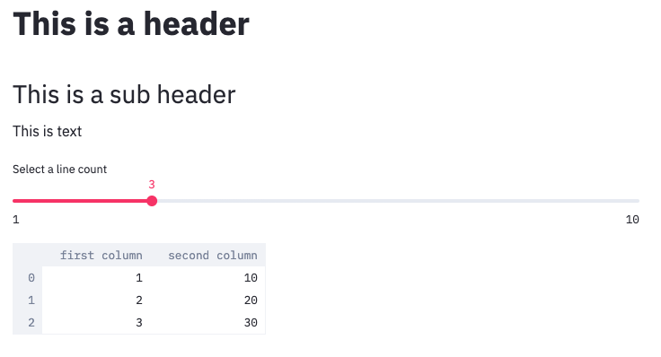
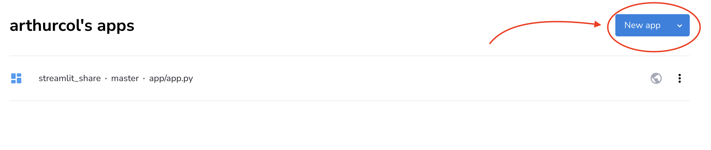
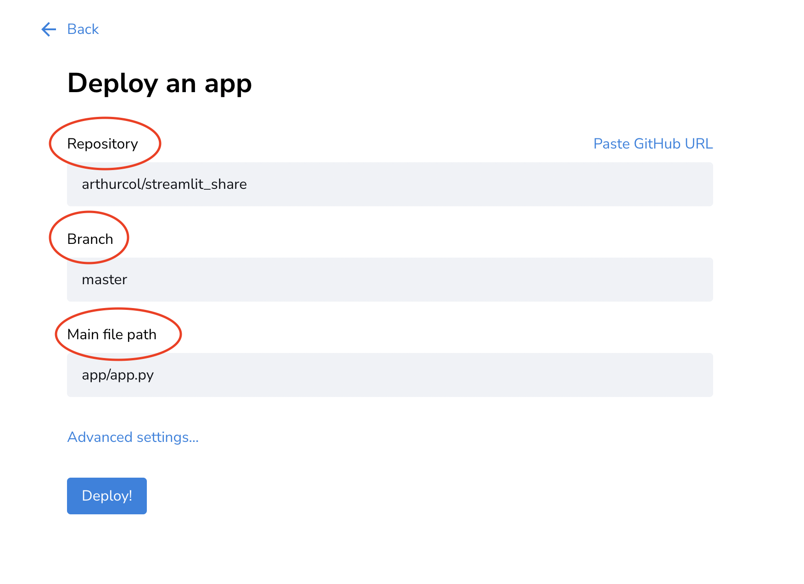
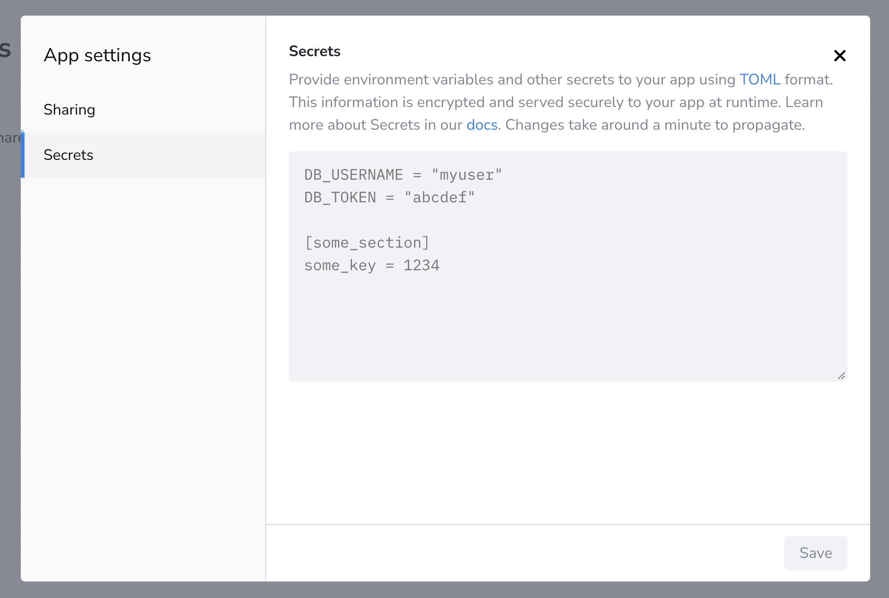
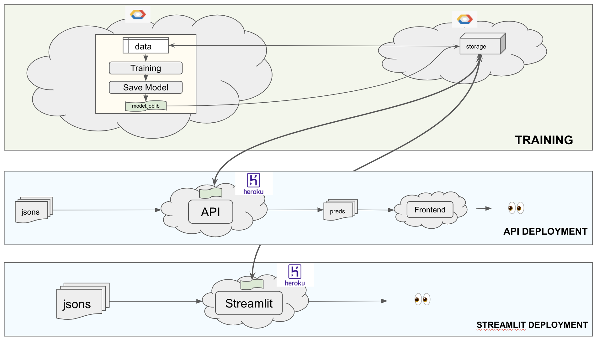

User Interface
Créer une interface utilisateur pour un modèle ML avec Streamlit — construire une app interactive, la connecter à une API de prédiction, et la déployer sur Streamlit Cloud.
📋 Cheatsheet — User Interface (Streamlit)
App Streamlit minimale
import streamlit as st
import pandas as pd
import requests
## Titre et texte
st.markdown("# My ML App") # markdown rendu en HTML
st.write("Welcome to the prediction app") # affiche texte, DataFrame, charts...
## Contrôles utilisateur
name = st.text_input("Your name") # champ texte
age = st.slider("Your age", 0, 100, 25) # slider (min, max, default)
option = st.selectbox("Model", ["Linear", "XGBoost"]) # dropdown
## Bouton + appel API
if st.button("Predict"):
params = {"age": age, "name": name}
response = requests.get("https://my-api.com/predict", params=params)
prediction = response.json()["prediction"]
st.success(f"Prediction: {prediction}") # affiche un message de succès
## Afficher un DataFrame
df = pd.DataFrame({"col1": [1, 2, 3], "col2": [4, 5, 6]})
st.dataframe(df) # tableau interactif
## Afficher un graphique
st.line_chart(df) # chart intégrépip install streamlit
streamlit run app.py # lance l'app dans le navigateur
## → http://localhost:8501 # auto-reload à chaque saveStructure de projet multi-pages
## Structure
## ├── app.py # page principale
## ├── pages/
## │ ├── page_01.py # page secondaire (auto-détectée)
## │ └── page_02.py
## ├── requirements.txt # dépendances
## └── .streamlit/
## └── secrets.toml # secrets locaux (⚠️ dans .gitignore)Déployer sur Streamlit Cloud
## 1. Pusher le repo sur GitHub
## 2. Connecter Streamlit Cloud à GitHub
## 3. Sélectionner le repo et le fichier app.py
## 4. Ajouter les SECRETS si nécessaire (API keys, credentials)
## → URL publique générée automatiquementSecrets
## Dans Streamlit Cloud : Settings → Secrets (format TOML)
## spell = "alohomora"
## [api]
## key = "secretkey"
## Dans le code :
import streamlit as st
spell = st.secrets["spell"] # accès direct
api_key = st.secrets.api.key # accès par section⚠️ Récapitulatif — Erreurs clés à éviter
Oublier que Streamlit réexécute tout le script à chaque interaction
Chaque clic, chaque changement de slider relance le script de haut en bas — les calculs lourds sont recalculés à chaque fois.
❌ model = load_model() au top-level → rechargé à chaque interaction
✅ Utiliser @st.cache_data ou @st.cache_resource pour mettre en cache les résultats lourds
Mettre le modèle ML directement dans l'app Streamlit
Streamlit est un frontend léger — le modèle doit tourner côté backend (API).
❌ import tensorflow; model = tf.keras.models.load_model(...) dans app.py → app lourde, lente, fragile
✅ Séparer backend (API FastAPI sur Cloud Run) et frontend (Streamlit) — l'app appelle l'API via requests.get()
Commiter secrets.toml dans Git
Ce fichier contient des API keys et credentials — il doit rester local.
❌ git add .streamlit/secrets.toml → credentials exposées
✅ Ajouter .streamlit/secrets.toml dans .gitignore et utiliser les Secrets de Streamlit Cloud en production
Stocker des données sensibles ou lourdes directement dans le repo
Le repo est public (ou partagé) — les fichiers lourds ralentissent le clone et le déploiement.
❌ raw_data/dataset_500MB.csv dans le repo GitHub
✅ Stocker sur Google Cloud Storage et accéder via les Secrets Streamlit
Créer un repo Git à l'intérieur d'un autre repo Git
Imbriquer des repos cause des comportements imprévisibles avec Git.
❌ cd ~/code/data-challenges && mkdir myapp && cd myapp && git init
✅ Créer le repo à côté : cd ~/code/USER_NAME && mkdir myapp && cd myapp && git init
1) Rappels Web — HTTP
1.1 Requête / Réponse

Le navigateur (ou le code) envoie une requête HTTP à un serveur, qui renvoie une réponse (HTML pour un site, JSON pour une API).

1.2 GET vs POST
- GET : récupérer des données (paramètres dans l'URL via query string)
- POST : envoyer des données (paramètres dans le body de la requête)
2) Streamlit — Framework d'apps ML
2.1 Présentation

Streamlit permet aux Data Scientists de créer des apps web interactives sans équipe de développement frontend. Le script Python est interprété de haut en bas, chaque élément étant rendu dans le navigateur.
2.2 Comparaison des frameworks
| Jupyter | Streamlit | Flask | Django | |
|---|---|---|---|---|
| Environnement | ❌ Notebook | ✅ Site web | ✅ Site web | ✅ Site web |
| Input utilisateur | ❌ DataFrame | ✅ Contrôles | ✅ Contrôles | ✅ Contrôles |
| Design | ❌ Notebook | ✅ Auto | ✅ HTML/CSS | ✅ HTML/CSS |
| Complexité | ✅ Aucune | ✅ Faible | ❌ Moyenne | ❌ Élevée |
2.3 Exemple d'app
import streamlit as st
import numpy as np
import pandas as pd
st.markdown("""# This is a header
## This is a sub header
This is text""")
df = pd.DataFrame({
'first column': list(range(1, 11)),
'second column': np.arange(10, 101, 10)
})
line_count = st.slider('Select a line count', 1, 10, 3) # slider interactif
head_df = df.head(line_count) # filtre selon le slider
head_df # affiche le DataFrame
2.4 Lancer et hot-reload
streamlit run app.pyStreamlit recharge automatiquement la page à chaque sauvegarde du fichier.
Streamlit réinterprète tout le script à chaque interaction utilisateur. Utiliser @st.cache_data pour les calculs lourds et @st.cache_resource pour les connexions/modèles.
👉 Streamlit quick reference — Le Wagon
👉 Streamlit documentation officielle
3) Déployer sur Streamlit Cloud
3.1 Structure du projet
.
├── app.py # script principal
├── pages/ # pages secondaires (auto-détectées)
│ ├── page_01.py
│ └── page_02.py
├── requirements.txt # dépendances (streamlit, pandas, requests…)
└── .streamlit/
└── secrets.toml # secrets locaux (⚠️ dans .gitignore)3.2 Déploiement

- Pusher le repo sur GitHub
- Connecter Streamlit Cloud à GitHub
- Sélectionner le repo et le fichier
app.py - L'app est déployée avec une URL publique

3.3 Secrets

Pour les credentials (API keys, GCS access…), utiliser les Secrets de Streamlit Cloud (format TOML) :
## Définir dans Streamlit Cloud → Settings → Secrets :
## [api]
## key = "my_secret_key"
## Accéder dans le code :
api_key = st.secrets.api.keyPour tester localement : créer .streamlit/secrets.toml (et l'ajouter à .gitignore).
4) Architecture backend/frontend
4.1 Bonne pratique
Séparer le backend (API de prédiction, modèle lourd → Cloud Run) du frontend (interface légère → Streamlit Cloud). L'app Streamlit appelle l'API via requests.get().

4.2 Pourquoi séparer ?
- Le modèle peut être lourd (>1 GB) — trop pour Streamlit Cloud
- Les environnements sont différents (TensorFlow côté backend, pas côté frontend)
- Le scaling est indépendant (l'API peut scaler sans toucher au frontend)
5) Design Tips
5.1 UX — User Experience
- L'app explique-t-elle clairement les résultats du modèle ?
- Combien de clics pour obtenir une prédiction ?
- Le feedback est-il immédiat ?
5.2 UI — User Interface
- Les résultats sont-ils affichés dans un graphique clair ?
- Les boutons et formulaires sont-ils faciles à repérer ?
5.3 Accessibilité (WCAG)
- ✅ Contraste de couleurs élevé, ne pas transmettre d'info par la couleur seule
- ✅ Texte suffisamment grand avec espacement adéquat
- ✅ Titres descriptifs pour chaque graphique
- ✅ Résumés textuels des insights visuels
📚 Bibliographie
- 👉 Streamlit documentation
- 👉 Streamlit quick reference — Le Wagon
- 👉 Streamlit Cloud deployment
- 👉 Streamlit Secrets management
🚀 Challenges
- Créer une app Streamlit qui appelle l'API TaxiFare et affiche la prédiction
- Déployer l'app sur Streamlit Cloud connectée au repo GitHub
- Ajouter des contrôles interactifs (sliders, inputs, carte) et du design
🧭 Introduction
Imaginez que vous venez de construire un modèle de machine learning capable de prédire le prix d'une course de taxi. Bravo ! Mais comment est-ce qu'un utilisateur lambda — quelqu'un qui ne sait pas coder — va pouvoir l'utiliser ? Il ne peut pas ouvrir un terminal et lancer des lignes Python.
C'est là qu'intervient l'interface utilisateur (UI). C'est la vitrine de votre modèle ML : une page web que n'importe qui peut utiliser pour entrer des données et obtenir une prédiction, sans avoir à toucher une seule ligne de code.
Dans ce cours, on va utiliser Streamlit, un outil Python qui permet de créer cette vitrine très rapidement, sans avoir besoin de connaitre HTML, CSS ou JavaScript.
A retenir
- Streamlit transforme un script Python en application web interactive.
- L'interface (frontend) est séparée du modèle (backend) — elles communiquent via une API.
- Chaque interaction utilisateur (clic, glissement de slider) relance tout le script de haut en bas.
- Les secrets (clés API, mots de passe) ne doivent jamais être mis dans le code ni dans Git.
- Streamlit Cloud permet de déployer votre app gratuitement en quelques clics.
Analogie fil rouge
Votre modèle ML, c'est le cuisinier en cuisine. L'interface Streamlit, c'est la salle du restaurant : le client (utilisateur) n'entre jamais en cuisine — il commande via le menu (les contrôles), et le serveur (l'API) fait le lien entre les deux.
Plan du cours
- Rappels Web — comment fonctionne une requête HTTP
- Streamlit — créer une app interactive en Python
- Déployer sur Streamlit Cloud
- Architecture backend / frontend — pourquoi séparer les deux
- Bonnes pratiques de design (UX/UI)
1. Rappels Web — HTTP
1.1 Comment fonctionne une requête web ?
Quand vous tapez une adresse dans votre navigateur, voici ce qui se passe :
- Votre navigateur envoie une requête à un serveur (un ordinateur quelque part sur internet).
- Le serveur traite la demande et renvoie une réponse.
- Si c'est un site web, la réponse contient du HTML. Si c'est une API, la réponse contient du JSON (des données structurées).
C'est exactement le même principe quand votre app Streamlit "appelle" votre API ML : elle envoie une requête, l'API répond avec une prédiction en JSON.
1.2 GET vs POST — deux façons d'envoyer des données
Il existe deux méthodes HTTP principales :
| Méthode | Usage | Exemple |
|---|---|---|
| GET | Récupérer des données | Demander une prédiction en passant les paramètres dans l'URL |
| POST | Envoyer des données (corps de la requête) | Envoyer une image, un fichier, un texte long |
Pour une API ML simple, on utilise souvent GET : les paramètres (age, distance, etc.) sont passés dans l'URL, comme https://mon-api.com/predict?age=30&distance=5.
2. Streamlit — Créer une app interactive en Python
2.1 C'est quoi Streamlit ?
Streamlit est une bibliothèque Python qui permet de créer des applications web interactives uniquement en Python. Pas besoin de HTML, CSS ou JavaScript.
Vous écrivez un script Python, vous le lancez avec une commande, et Streamlit ouvre automatiquement une page web dans votre navigateur.
Comparaison avec d'autres outils :
| Outil | Type | Facilité | Contrôles utilisateur |
|---|---|---|---|
| Jupyter | Notebook (pas un site) | Très facile | Non |
| Streamlit | Site web | Facile | Oui |
| Flask | Site web | Moyenne | Oui (mais HTML requis) |
| Django | Site web | Difficile | Oui (mais HTML requis) |
Streamlit est le choix parfait pour un data scientist qui veut montrer son modèle sans devenir développeur web.
2.2 Installation et lancement
pip install streamlit # installe Streamlit une seule fois
streamlit run app.py # lance l'app — ouvre http://localhost:8501
# Streamlit recharge automatiquement la page à chaque fois que vous sauvegardez le fichierLe "hot-reload" est très pratique : vous modifiez votre code, vous sauvegardez, et la page se met à jour immédiatement. Pas besoin de relancer la commande.
2.3 Les éléments de base d'une app Streamlit
Voici les briques de base que vous utiliserez tout le temps.
Afficher du texte et des titres :
import streamlit as st
# st.markdown() permet d'utiliser la syntaxe Markdown (titres, gras, listes...)
st.markdown("# Mon Application ML") # affiche un grand titre (H1)
st.markdown("## Bienvenue !") # sous-titre (H2)
# st.write() est très polyvalent : il affiche du texte, des DataFrames, des graphiques...
st.write("Entrez vos paramètres ci-dessous pour obtenir une prédiction.")Collecter des informations de l'utilisateur :
import streamlit as st
# Champ de texte libre
nom = st.text_input("Votre nom") # l'utilisateur tape du texte
# Slider pour choisir un nombre
age = st.slider("Votre âge", 0, 100, 25) # (label, min, max, valeur_par_défaut)
# Menu déroulant
modele = st.selectbox("Choisir un modèle", ["Régression linéaire", "XGBoost"])
# Bouton
if st.button("Lancer la prédiction"): # le code dans le if s'exécute au clic
st.write(f"Bonjour {nom}, vous avez {age} ans !")Chaque widget (slider, champ texte, bouton) retourne une valeur Python normale. age est un entier, nom est une chaîne, modele est une chaîne. Vous les utilisez comme n'importe quelle variable Python.
Afficher des données et des graphiques :
import streamlit as st
import pandas as pd
import numpy as np
# Créer un DataFrame exemple
df = pd.DataFrame({
"distance_km": [1, 2, 3, 4, 5],
"prix_euros": [5, 8, 11, 14, 17]
})
# Afficher le DataFrame sous forme de tableau interactif
st.dataframe(df) # tableau avec tri, filtres intégrés
# Afficher un graphique en ligne directement depuis le DataFrame
st.line_chart(df.set_index("distance_km")) # axe X = distance, axe Y = prix2.4 Un exemple complet : app de prédiction
Voici une app complète qui appelle une API externe et affiche la prédiction.
import streamlit as st # pour l'interface
import requests # pour appeler l'API
# --- Titre de l'application ---
st.markdown("# Prédiction du prix de taxi")
st.write("Remplissez les informations ci-dessous pour estimer le prix de votre course.")
# --- Contrôles utilisateur ---
distance = st.slider("Distance (km)", 1, 50, 10) # slider de 1 à 50 km, défaut 10
nb_passagers = st.selectbox("Nombre de passagers", [1, 2, 3, 4, 5, 6])
heure = st.slider("Heure de départ (h)", 0, 23, 8) # heure entre 0h et 23h
# --- Bouton de prédiction ---
if st.button("Calculer le prix"):
# On prépare les paramètres à envoyer à l'API
params = {
"distance": distance,
"passengers": nb_passagers,
"hour": heure
}
# On appelle l'API (méthode GET) — l'API est hébergée sur Cloud Run
response = requests.get("https://mon-api-taxifare.com/predict", params=params)
# On extrait la prédiction de la réponse JSON
prediction = response.json()["fare"]
# On affiche le résultat en vert (message de succès)
st.success(f"Prix estimé : {prediction:.2f} €")Ce que fait ce code, étape par étape :
- On crée 3 contrôles (2 sliders + 1 selectbox) pour collecter les infos de l'utilisateur.
- Quand l'utilisateur clique sur le bouton, le code dans le
ifs'exécute. - On envoie les paramètres à l'API via une requête GET.
- L'API renvoie un JSON avec le prix prédit.
- On affiche ce prix avec
st.success().
Si l'API n'est pas accessible (serveur éteint, mauvaise URL), requests.get() va lever une exception. En production, il faut ajouter un try/except pour afficher un message d'erreur clair à l'utilisateur.
2.5 Le comportement clé de Streamlit : tout est réexécuté
C'est le point le plus important à comprendre sur Streamlit.
A chaque interaction (clic, mouvement de slider, saisie de texte), Streamlit réexécute le script Python de haut en bas.
Cela a une conséquence importante : si vous chargez un modèle lourd au début du script, il sera rechargé à chaque interaction.
import streamlit as st
import tensorflow as tf
# MAUVAISE PRATIQUE : rechargé à chaque interaction (lent !)
model = tf.keras.models.load_model("mon_modele.h5")
# ...suite de l'appLa solution : utiliser les décorateurs de cache de Streamlit.
import streamlit as st
import tensorflow as tf
# BONNE PRATIQUE : le modèle est chargé une seule fois, puis mis en cache
@st.cache_resource # cache les ressources lourdes (modèles, connexions)
def charger_modele():
return tf.keras.models.load_model("mon_modele.h5")
model = charger_modele() # appel du modèle : chargé une fois, mémorisé ensuite
# BONNE PRATIQUE aussi : cache pour les données
@st.cache_data # cache les DataFrames, listes, résultats de calculs
def charger_donnees():
return pd.read_csv("data.csv")
df = charger_donnees()Deux décorateurs à retenir :
- @st.cache_resource : pour les objets lourds qui ne changent pas (modèles ML, connexions à une base de données).
- @st.cache_data : pour les données (DataFrames, résultats de requêtes).
Streamlit ne réexécute la fonction que si les paramètres d'entrée changent.
3. Déployer sur Streamlit Cloud
3.1 Structure de projet recommandée
Avant de déployer, organisez votre projet comme ceci :
mon-projet/
├── app.py # script principal — point d'entrée de l'app
├── pages/ # pages supplémentaires (optionnel)
│ ├── page_01.py # Streamlit les détecte automatiquement
│ └── page_02.py
├── requirements.txt # liste des bibliothèques Python nécessaires
└── .streamlit/
└── secrets.toml # clés API et secrets — JAMAIS dans Git !Le fichier requirements.txt est indispensable pour le déploiement. Il liste toutes les bibliothèques que votre app utilise :
streamlit
pandas
requests
numpy3.2 Étapes de déploiement
- Pousser votre code sur GitHub (avec
git push). - Aller sur share.streamlit.io et connecter votre compte GitHub.
- Sélectionner votre repo et indiquer le fichier
app.py. - Streamlit Cloud installe les dépendances et déploie l'app automatiquement.
- Vous obtenez une URL publique que vous pouvez partager avec n'importe qui.
Streamlit Cloud est gratuit pour les projets publics. Votre app est accessible 24h/24 sans que vous ayez besoin de garder votre ordinateur allumé.
3.3 Gérer les secrets (clés API, mots de passe)
Votre app a besoin de clés API pour appeler des services externes ? Il ne faut jamais les écrire en dur dans le code.
En local, créez le fichier .streamlit/secrets.toml :
# .streamlit/secrets.toml
# Ce fichier NE DOIT PAS être dans Git !
api_url = "https://mon-api-taxifare.com"
[google]
credentials = "ma-cle-json-google"Dans le code, accédez aux secrets ainsi :
import streamlit as st
# Accès direct à une valeur
api_url = st.secrets["api_url"] # retourne "https://mon-api-taxifare.com"
# Accès à une valeur dans une section
cle_google = st.secrets.google.credentials # accès via la section [google]Sur Streamlit Cloud, ajoutez les mêmes secrets dans Settings → Secrets (interface web). Streamlit Cloud les injecte automatiquement dans st.secrets.
Toujours ajouter .streamlit/secrets.toml dans votre fichier .gitignore. Si vous committez ce fichier par erreur, vos clés sont exposées publiquement sur GitHub — il faut alors les révoquer immédiatement.
4. Architecture backend / frontend
4.1 Pourquoi séparer l'interface du modèle ?
C'est la bonne pratique fondamentale de ce cours.
Ne faites pas ça :
# app.py — MAUVAISE PRATIQUE
import streamlit as st
import tensorflow as tf # bibliothèque très lourde (plusieurs GB)
model = tf.keras.models.load_model("mon_modele.h5") # charge le modèle dans Streamlit
if st.button("Prédire"):
result = model.predict(...)
st.write(result)Pourquoi c'est problématique :
- Streamlit Cloud est un environnement léger — il ne peut pas gérer des modèles de plusieurs GB.
- TensorFlow/PyTorch ne sont pas faits pour tourner dans une interface web.
- Si vous voulez mettre à jour le modèle, vous devez redeployer toute l'interface.
Faites ça à la place :
[Utilisateur]
|
| (navigateur web)
v
[Streamlit Cloud] ← interface légère (app.py, ~quelques Mo)
|
| requests.get("https://mon-api.com/predict?...")
v
[Cloud Run / API FastAPI] ← backend lourd (modèle ML, TensorFlow, ~plusieurs GB)# app.py — BONNE PRATIQUE
import streamlit as st
import requests
if st.button("Prédire"):
# On appelle l'API — le modèle tourne ailleurs, pas ici
response = requests.get("https://mon-api.com/predict", params={"distance": 10})
prediction = response.json()["fare"]
st.write(f"Prédiction : {prediction} €")4.2 Les avantages de cette séparation
- Légèreté : Streamlit Cloud n'a besoin que de
requests, pas de TensorFlow. - Indépendance : vous pouvez mettre à jour le modèle sans toucher à l'interface.
- Scalabilité : le backend peut gérer plus de requêtes indépendamment du frontend.
- Clarté : chaque composant a une seule responsabilité.
Cette architecture s'appelle "découplage frontend/backend". C'est un principe universel en développement logiciel. Le frontend affiche, le backend calcule. Les deux se parlent via une API.
5. Bonnes pratiques de design (UX/UI)
5.1 UX — Expérience utilisateur
L'UX, c'est la question : "Est-ce que mon app est agréable et facile à utiliser ?"
Posez-vous ces questions :
- Est-ce que l'app explique clairement ce qu'elle fait ? Un utilisateur qui arrive pour la première fois doit comprendre en 5 secondes.
- Combien de clics pour obtenir une prédiction ? Moins c'est mieux. L'idéal : remplir les champs, cliquer sur un bouton, voir le résultat.
- Le feedback est-il immédiat ? Si l'appel API prend 3 secondes, affichez un spinner (
st.spinner()).
import streamlit as st
import requests
import time
if st.button("Calculer"):
with st.spinner("Calcul en cours..."): # affiche une animation pendant l'attente
response = requests.get("https://mon-api.com/predict")
prediction = response.json()["fare"]
st.success(f"Résultat : {prediction} €") # s'affiche une fois le calcul terminé5.2 UI — Interface visuelle
L'UI, c'est la question : "Est-ce que mon app est claire et bien organisée ?"
- Utilisez des graphiques pour afficher les résultats quand c'est pertinent (
st.bar_chart(),st.line_chart()). - Regroupez les contrôles logiquement — Streamlit permet d'organiser en colonnes avec
st.columns(). - Donnez des titres clairs à chaque section.
import streamlit as st
# Organiser en deux colonnes
col1, col2 = st.columns(2) # crée deux colonnes côte à côte
with col1:
distance = st.slider("Distance (km)", 1, 50, 10)
with col2:
passagers = st.slider("Passagers", 1, 6, 1)5.3 Accessibilité
Une bonne interface est utilisable par tous, y compris les personnes ayant des déficiences visuelles.
- Assurez-vous que le contraste entre le texte et le fond est suffisamment élevé.
- Ne transmettez pas d'information par la couleur seule (ex : rouge = erreur) — ajoutez toujours un texte.
- Donnez des titres descriptifs à vos graphiques.
- Ajoutez des résumés textuels pour les insights visuels importants.
5 erreurs classiques à éviter
Erreur 1 — Charger le modèle sans cache
Mettre model = load_model() au top-level du script sans @st.cache_resource : le modèle est rechargé à chaque interaction. L'app devient lente et inutilisable.
Erreur 2 — Mettre le modèle ML dans Streamlit
Importer TensorFlow ou PyTorch directement dans app.py : Streamlit Cloud ne peut pas gérer des modèles lourds. Utilisez une API FastAPI sur Cloud Run et appelez-la depuis Streamlit.
Erreur 3 — Committer secrets.toml dans Git
git add .streamlit/secrets.toml expose vos clés API publiquement. Ajoutez toujours ce fichier à .gitignore avant de committer quoi que ce soit.
Erreur 4 — Mettre des fichiers de données lourds dans le repo
Un fichier CSV de 500 Mo dans le repo GitHub ralentit tout le déploiement. Stockez vos données sur Google Cloud Storage et accédez-y via les secrets Streamlit.
Erreur 5 — Créer un repo Git dans un autre repo Git
Ne faites jamais git init dans un dossier qui appartient déjà à un repo Git. Créez toujours votre repo à côté, pas à l'intérieur.
🎯 Questions de vérification
- Que se passe-t-il exactement dans Streamlit quand l'utilisateur déplace un slider ?
Pensez à ce que Streamlit fait avec le script Python à ce moment-là, et ce que cela implique pour les calculs lourds.
- Quelle est la différence entre
@st.cache_dataet@st.cache_resource? Donnez un exemple d'utilisation pour chacun.
- Pourquoi est-il déconseillé de charger un modèle TensorFlow directement dans
app.py? Quelle architecture faut-il préférer, et comment les deux parties communiquent-elles ?
- Vous devez stocker une clé API Google Maps pour votre app Streamlit. Décrivez les deux endroits où vous allez la renseigner (local et production) et pourquoi vous ne pouvez pas simplement l'écrire dans
app.py.
📌 TL;DR
- Streamlit transforme un script Python en application web interactive — parfait pour exposer un modèle ML sans connaitre HTML/CSS.
- Le script est réexécuté de haut en bas à chaque interaction : utilisez
@st.cache_resource(modèles) et@st.cache_data(données) pour éviter les rechargements inutiles. - L'architecture recommandée sépare le frontend (Streamlit Cloud, léger) du backend (API FastAPI sur Cloud Run, modèle lourd) — les deux communiquent via
requests.get(). - Pour déployer : pusher sur GitHub, connecter Streamlit Cloud, sélectionner
app.py— une URL publique est générée automatiquement. - Les secrets (clés API) se gèrent via
.streamlit/secrets.tomlen local et Settings → Secrets sur Streamlit Cloud — jamais dans le code, jamais dans Git. - Un
requirements.txtest indispensable pour le déploiement : il liste toutes les bibliothèques utilisées. - Pensez UX : titre clair, peu de clics, feedback immédiat avec
st.spinner()pendant les appels API.
A. Concepts du cours
Pourquoi un data scientist doit savoir faire des UI
Un modèle qui reste dans un notebook Jupyter n'a aucune valeur pour le business. Pour qu'il soit utilisé, il faut le rendre accessible aux décideurs, analysts, ou utilisateurs finaux qui ne savent pas lancer Python.
Trois cas d'usage :
- Démos clients/internes : montrer ce que votre modèle fait, en live, avec des inputs réels
- Outils analytiques : permettre à un analyste de filtrer, explorer, comparer sans demander à un dev
- Prototypes produits : valider une idée avant d'engager une équipe frontend pour la version finale
Avant Streamlit (2019), faire une UI demandait Flask + HTML/CSS/JS — quelques jours de travail. Aujourd'hui, on transforme un script Python en app web en quelques minutes.
Analogie : un modèle ML sans UI, c'est comme un orchestre symphonique sans salle de concert. Vous avez beau jouer parfaitement, personne n'entend. L'UI est le pont entre votre travail technique et les utilisateurs qui en bénéficient. C'est ce qui transforme un POC en produit.
Streamlit : du Python à l'app web
Streamlit (2019) permet de créer une app web en pur Python. Pas de HTML/CSS/JS, pas de routing, pas de framework JavaScript.
# app.py
import streamlit as st
import pandas as pd
# Titre principal — équivalent d'un <h1>
st.title("Customer Churn Predictor")
# Bloc de texte (supporte le markdown)
st.write("Predict if a customer is likely to churn based on their profile.")
# --- Widgets d'input : Streamlit rerun le script à chaque changement ---
# Signature : slider(label, min, max, default)
age = st.slider("Age", 18, 100, 35)
tenure = st.number_input("Tenure (months)", 0, 240, 12)
monthly_charges = st.slider("Monthly charges ($)", 0, 200, 50)
# --- Bouton : l'action n'a lieu que si cliqué (renvoie True une fois) ---
if st.button("Predict"):
# Construire un DataFrame à 1 ligne avec les bons noms de colonnes
features = pd.DataFrame([[age, tenure, monthly_charges]],
columns=["age", "tenure", "monthly_charges"])
prob = model.predict_proba(features)[0, 1]
# st.metric affiche un gros chiffre façon dashboard
st.metric("Churn probability", f"{prob:.1%}")
# Feedback coloré selon la prédiction
if prob > 0.5:
st.error("This customer is at risk of churning")
else:
st.success("This customer is likely to stay")Lancement :
streamlit run app.pyVous obtenez immédiatement une app web sur http://localhost:8501. Aucune configuration. C'est presque magique.
Bonne pratique : pour un data scientist, Streamlit doit être dans votre toolbox. Il vous permet de partager vos résultats avec n'importe qui, sans avoir à expliquer comment lancer un notebook ou un script. C'est la différence entre "j'ai un modèle" et "j'ai un produit".
Composants de base
Streamlit propose ~50 composants pour construire des UI complètes.
Texte et structure :
st.title("Title")
st.header("Header")
st.subheader("Subheader")
st.write("Plain text or markdown")
st.markdown("**Bold** and _italic_")
st.code("print('hello')", language="python")
st.latex(r"e^{i\pi} + 1 = 0")Inputs :
name = st.text_input("Name")
age = st.number_input("Age", 0, 120, 30)
mood = st.slider("Mood", 0, 10, 5)
city = st.selectbox("City", ["Paris", "Lyon", "Marseille"])
hobbies = st.multiselect("Hobbies", ["sport", "music", "code"])
agreed = st.checkbox("I agree")
file = st.file_uploader("Upload CSV", type=["csv"])Outputs :
st.dataframe(df) # Tableau interactif
st.table(df) # Tableau statique
st.metric("Sales", "$50k", "+12%")
st.line_chart(df)
st.bar_chart(df)
st.map(geo_df) # Carte avec lat/lng
st.image("image.png")
st.audio("audio.mp3")
st.video("video.mp4")Layouts :
col1, col2, col3 = st.columns(3)
col1.metric("Sales", "$50k")
col2.metric("Visits", "1,234")
col3.metric("Conversion", "4.2%")
with st.sidebar:
st.header("Filters")
category = st.selectbox("Category", categories)
with st.expander("Show details"):
st.write("Hidden by default")
tab1, tab2, tab3 = st.tabs(["Overview", "Details", "Help"])
with tab1:
st.write("Overview content")State et caching
Par défaut, Streamlit réexécute tout le script à chaque interaction utilisateur. C'est simple à comprendre mais peut être lent si vous chargez un gros modèle.
Caching : utiliser @st.cache_data ou @st.cache_resource pour éviter de recharger.
# @st.cache_data : sérialise le retour (bon pour DataFrames, dicts, listes)
# Re-exécuté uniquement si les arguments de la fonction changent
@st.cache_data
def load_data():
return pd.read_csv("big_dataset.csv") # Lu une seule fois
# @st.cache_resource : partagé entre toutes les sessions, pas sérialisé
# À utiliser pour des objets lourds non-picklables (modèles, connexions DB)
@st.cache_resource
def load_model():
return joblib.load("model.pkl") # Chargé une seule fois au démarrage
df = load_data()
model = load_model()@st.cache_data est pour les données (DataFrames, dicts, listes). @st.cache_resource est pour les objets coûteux (modèles, connexions DB).
Session state : pour persister l'état entre les exécutions du script.
if "counter" not in st.session_state:
st.session_state.counter = 0
if st.button("Increment"):
st.session_state.counter += 1
st.write(f"Counter: {st.session_state.counter}")C'est crucial pour des apps multi-étapes (formulaires longs, conversations, wizards).
Piège classique : oublier le caching et avoir une app qui prend 30 secondes à charger à chaque clic. Toujours mettre @st.cache_data ou @st.cache_resource sur les fonctions de chargement de données et de modèles. Vérifiez en cliquant plusieurs fois — si c'est lent à chaque clic, vous avez oublié le cache.
B. Compléments avancés
Gradio pour les démos ML
Gradio (2019, racheté par Hugging Face) est l'alternative orientée démos ML. Particulièrement pratique pour exposer un modèle qui prend des images, audio, ou texte.
import gradio as gr
def predict(image):
return model.predict(image)
gr.Interface(
fn=predict,
inputs=gr.Image(),
outputs=gr.Label(num_top_classes=3),
title="Image Classifier",
).launch()Avantages par rapport à Streamlit :
- Encore plus rapide pour exposer un modèle (5 lignes au lieu de 20)
- Meilleurs widgets pour le ML : image avec annotation, audio waveform, vidéo
- Génère un lien public partageable (
launch(share=True)) en un clic - Intégré à Hugging Face Spaces pour héberger gratuitement
Inconvénients :
- Moins flexible pour des UI custom complexes
- Moins de composants que Streamlit
Recommandation : utilisez Gradio pour les démos rapides de modèles individuels (vision, audio, texte). Utilisez Streamlit pour les apps plus larges avec plusieurs onglets, dashboards, et state complexe.
Dash pour les dashboards complexes
Dash (Plotly, 2017) est plus puissant mais plus complexe. Construit sur Flask + React.
from dash import Dash, html, dcc, callback, Output, Input
import plotly.express as px
app = Dash(__name__)
app.layout = html.Div([
html.H1("Sales Dashboard"),
dcc.Dropdown(["Q1", "Q2", "Q3", "Q4"], "Q1", id="quarter"),
dcc.Graph(id="chart"),
])
@callback(Output("chart", "figure"), Input("quarter", "value"))
def update_chart(quarter):
df_filtered = df[df["quarter"] == quarter]
return px.bar(df_filtered, x="region", y="sales")
app.run(debug=True)| Streamlit | Dash | Gradio | |
|---|---|---|---|
| Syntaxe | Très simple | Verbose | Très simple |
| Customisation | Modérée | Très flexible | Limitée |
| Cas d'usage | Apps data, prototypes | Dashboards corporate | Démos ML |
| Apprentissage | < 1h | Plusieurs jours | < 30 min |
Quand passer à Dash : quand vous avez besoin d'une UI vraiment custom (pixel-perfect), avec des callbacks complexes, des composants Plotly avancés, ou une intégration dans une infra existante. Pour 90% des cas data science, Streamlit ou Gradio suffisent.
Déploiement et hébergement
Quatre options pour héberger votre app Streamlit/Gradio :
| Plateforme | Coût | Quand |
|---|---|---|
| Streamlit Community Cloud | Gratuit | Apps publiques, prototypes |
| Hugging Face Spaces | Gratuit (CPU), payant (GPU) | Démos ML, Gradio |
| Render, Railway, Fly.io | $5-20/mois | Apps privées simples |
| Cloud Run, AWS App Runner, Azure Container Apps | Pay-per-use | Production sérieuse |
| Kubernetes | Variable | Très grosse échelle |
# Streamlit Community Cloud : juste push sur GitHub, ils détectent et déploient
# Hugging Face Spaces : git push vers leur registry
# Cloud Run :
gcloud run deploy churn-app --source . --region us-central1 --allow-unauthenticatedAuthentification : par défaut, votre app est publique. Pour la sécuriser :
- Streamlit-Authenticator : login avec mot de passe (basique)
- OAuth via fournisseurs externes : Auth0, Clerk, Firebase Auth
- Behind reverse proxy : Nginx + auth basic, ou un load balancer cloud avec IAM
# Auth basique avec Streamlit-Authenticator
import streamlit_authenticator as stauth
authenticator = stauth.Authenticate(config["credentials"], ...)
name, auth_status, username = authenticator.login("Login", "main")
if auth_status:
st.write(f"Welcome {name}")
# ... reste de l'app ...Sécurité : ne jamais déployer une app Streamlit avec des données sensibles sans authentification. Streamlit Community Cloud rend tout public par défaut. Pour des données business, choisissez une plateforme privée et activez l'auth dès le début.
C. Questions de compréhension
Q1 : Pourquoi Streamlit réexécute-t-il tout le script à chaque interaction utilisateur, et comment éviter que cela rende l'app lente ?
💡 Voir l'indice
caching.
✅ Voir la réponse
Streamlit a un modèle d'exécution stateless par défaut : à chaque interaction (clic, sélection), tout le script Python est ré-exécuté de haut en bas. C'est simple à comprendre — pas de gestion de state complexe à la React — mais cela signifie que toute opération coûteuse est recomputée à chaque clic. Solution : @st.cache_data et @st.cache_resource. Le décorateur mémorise le résultat selon les arguments d'entrée. Au prochain appel avec les mêmes arguments, Streamlit retourne directement le résultat caché sans exécuter la fonction. Cas d'usage typique : @st.cache_resource sur le chargement du modèle ML (objet lourd, immuable), @st.cache_data sur le chargement et le préprocessing du dataset. Sans ces décorateurs, votre app est inutilisable dès qu'elle dépasse quelques fonctions lourdes. Pour persister un état utilisateur entre les exécutions (formulaire multi-étapes, conversation), utilisez st.session_state qui est un dict persistant. Question d'entretien Streamlit : "Comment gérer l'état dans une app Streamlit ?" — la réponse parle de cache_data, cache_resource, et session_state.
Q2 : Vous voulez exposer votre modèle de classification d'images à un client non technique. Streamlit, Gradio ou Dash ?
💡 Voir l'indice
démo rapide.
✅ Voir la réponse
Gradio est le bon choix. Trois raisons. (1) Spécialisé ML : Gradio a des composants natifs gr.Image(), gr.Audio(), gr.Video() avec preview, drag-and-drop, et même la webcam pour l'image. C'est exactement ce dont vous avez besoin pour une démo de classification d'images. (2) 5 lignes de code : la version minimale d'un demo Gradio fait littéralement 5 lignes. C'est plus rapide que d'écrire un README. (3) Lien public partageable : gr.Interface(...).launch(share=True) génère un URL *.gradio.live valide 72h, accessible depuis n'importe où sans hébergement. Idéal pour envoyer à un client par email. Pour aller plus loin : déployer sur Hugging Face Spaces est gratuit, donne une URL permanente, et supporte même les GPU. Streamlit est plus adapté pour des apps multi-page complexes (dashboard + démos + analytics). Dash est réservé aux dashboards corporate hyper-customisés. Pour une démo modèle ML simple, Gradio gagne. Question d'entretien data science applicative : "Comment exposez-vous une démo de modèle à un non-technique ?" — la réponse mentionne Gradio + HF Spaces.
Q3 : Vous voulez authentifier les utilisateurs de votre app Streamlit pour qu'ils ne puissent pas tous voir les données. Comment faire proprement ?
💡 Voir l'indice
OAuth ou reverse proxy.
✅ Voir la réponse
Trois niveaux selon le contexte. Niveau 1 — Streamlit-Authenticator : librairie tierce qui ajoute un formulaire de login avec mots de passe stockés dans un YAML. Simple mais limité (pas de SSO, pas de gestion des permissions granulaires). OK pour des outils internes avec quelques utilisateurs. Niveau 2 — OAuth via fournisseur externe : utiliser Auth0, Clerk, Firebase Auth, ou Supabase Auth. Vous redirigez l'utilisateur vers leur page de login, ils retournent avec un token, vous le validez dans Streamlit. C'est plus robuste, supporte SSO Google/GitHub/Microsoft, et permet de gérer les rôles. C'est le standard pour des apps internes d'entreprise. Niveau 3 — Reverse proxy : déployer Streamlit derrière Nginx/Cloudflare/Cloud Run avec IAM. L'authentification est gérée à un niveau supérieur (load balancer, IdP), et Streamlit ne voit que des utilisateurs déjà authentifiés via des headers ou cookies. C'est la solution production sérieuse : zero impact sur le code Streamlit, intégration avec votre IdP entreprise, audit logs, etc. Recommandation : commencer par Streamlit-Authenticator pour valider le concept, passer à OAuth dès qu'il y a > 5 utilisateurs ou des données sensibles. Question d'entretien sécurité : "Comment authentifier une app Streamlit en prod ?" — la réponse exhaustive mentionne les 3 niveaux et leur trade-off.
Ressources additionnelles
- Streamlit documentation — claire et exhaustive
- Gradio documentation — pour les démos ML
- Hugging Face Spaces — héberger des Gradio gratuitement
- Streamlit Components — composants tiers avancés
- Plotly Dash — pour les dashboards complexes
- The Streamlit Cookbook — toutes les API d'un coup
- Web Application Development with Streamlit (Mohammad Khorasani) — pour aller au-delà des basics